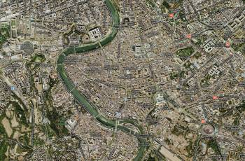

ROOMA
Ikuinen kaupunki
Rooman kartta
Rooma on kätevän kokoinen kaupunki, jossa on helppo liikkua. Ennen matkaa on hyvä tutustua Italian, Lazion ja Rooman karttoihin ja etsiä jo valmiiksi omien suosikkikohteiden sijainnit. Näin et päädy harhailemaan turhaan kaduille, vaan löydät helposti mitä olet etsimässä.
Hyvä yleiskartta löytyy esim. Kartat.org sivustolta. Nähtävyyksiin keskittynyt kartta löytyy täältä ja täältä. Hyvä taskukokoinen opaskirja ja kartta samassa paketissa löytyy tästä.
Kun suunnittelet matkaa Roomaan, muista myös lähistöllä olevat Sperlonga, Nettuno, Tivoli ja Anzio. Pääset näihin kohteisiin linja-autolla tai vuokra-autolla. Rooman lähistöltä löytyy rauhallisempia alueita, ja idyllisiä maisemia joiden keskellä on hauskaa matkustaa kiirettömästi.
© copyright Roomaan.fi | kaikki oikeudet pidätetään